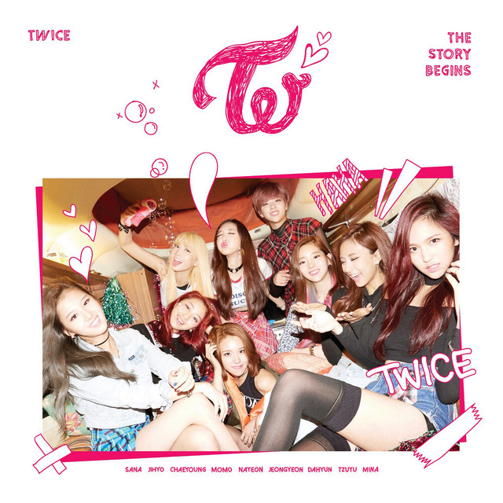
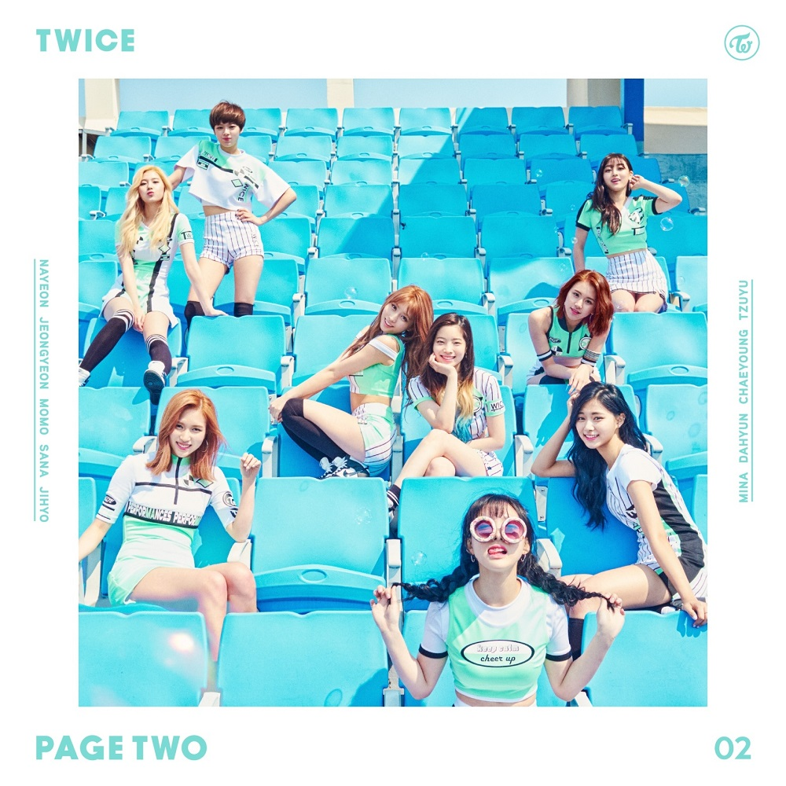
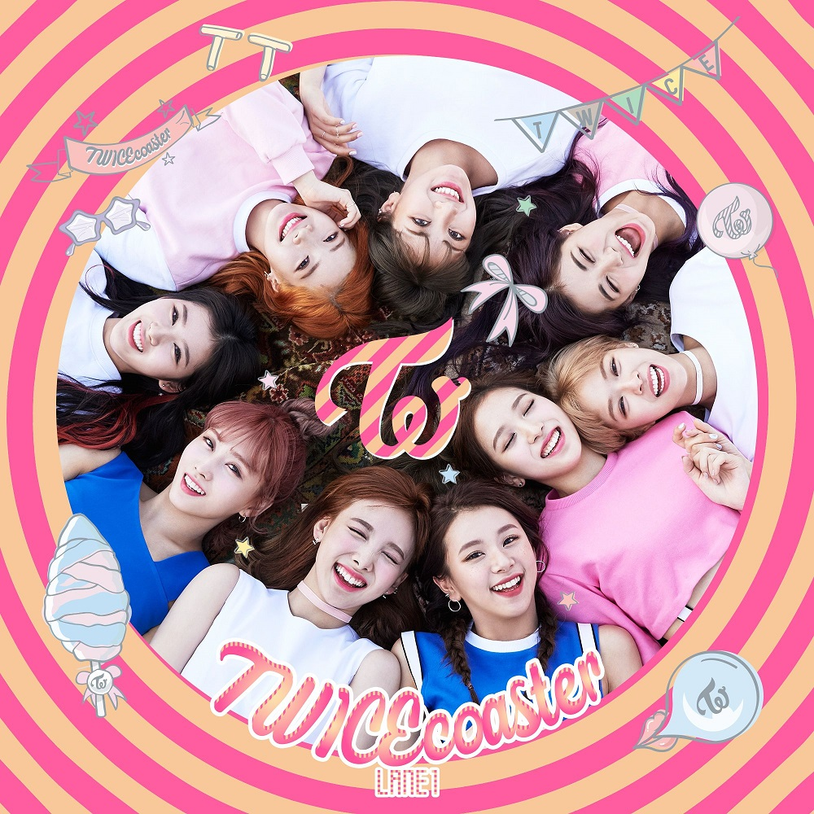
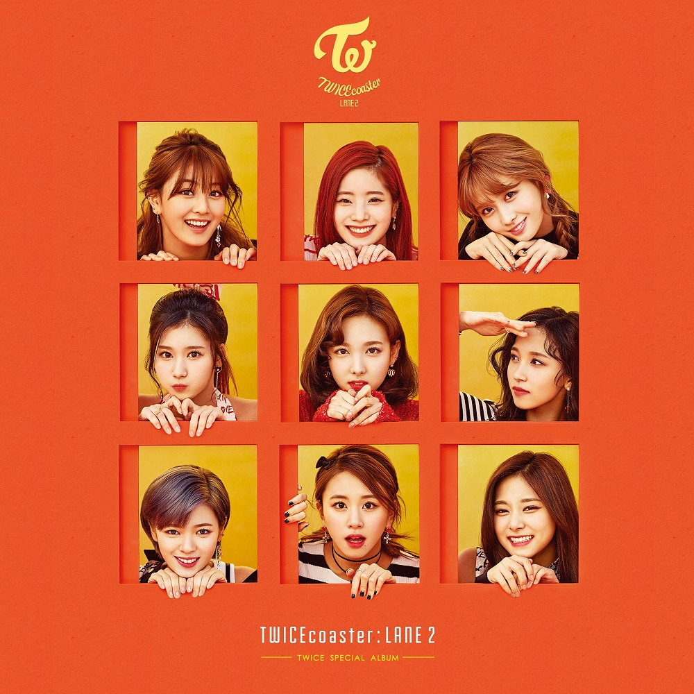
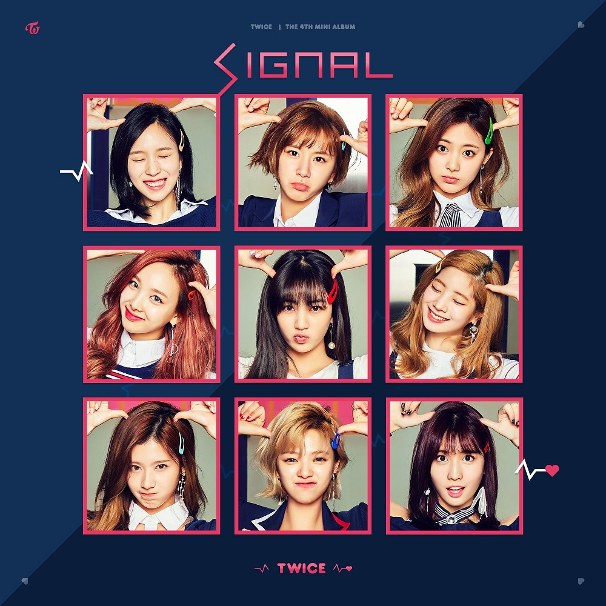

Explora la música de TWICE

Fecha de lanzamiento: 20 de octubre de 2015
El primer mini álbum de TWICE que marcó su debut oficial. El álbum incluye su exitoso sencillo "Like Ooh-Ahh", que se convirtió en un éxito viral.

Fecha de lanzamiento: 25 de abril de 2016
Su segundo mini álbum presenta "Cheer Up", que se convirtió en una de sus canciones más icónicas y les otorgó su primer Music Show Win.

Fecha de lanzamiento: 24 de octubre de 2016
El tercer mini álbum incluye el mega hit "TT", que dominó las listas musicales y se convirtió en un fenómeno cultural en Corea del Sur.

Fecha de lanzamiento: 20 de febrero de 2017
Reedición especial de TWICEcoaster con nuevas canciones incluyendo "Knock Knock".

Fecha de lanzamiento: 15 de mayo de 2017
Cuarto mini álbum con el título homónimo "Signal", que mostró un concepto más maduro.